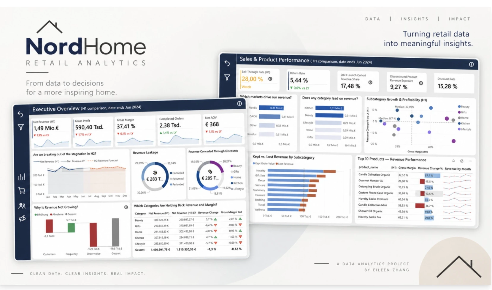
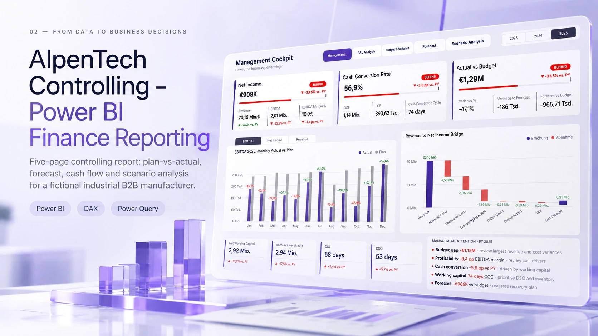
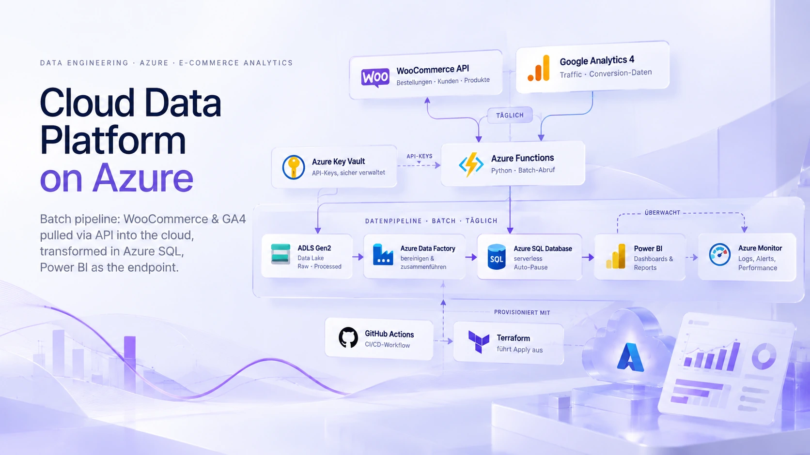

Data Analyst · Business Intelligence
From data to clarity.
From clarity to decisions.
I’m interested in what happens behind the numbers — from understanding a business question and structuring the data to building reliable insights that help people make better decisions.
data
& model
& insight
decision
Selected work
Projects

01 — From raw data to BI NordHome Retail AnalyticsData warehouse built on Kimball, ETL in PostgreSQL and a Power BI report for the H1 2024 review.

02 — From data to business decisions AlpenTech Controlling – Power BI Finance ReportingFive-page controlling report: plan-vs-actual forecast, cash flow and scenario analysis for a fictional industrial B2B manufacturer.

03 — From business systems to analytics Cloud Data Platform on AzureBatch pipeline: WooCommerce & GA4 pulled via API into the cloud, transformed in Azure SQL, Power BI as the endpoint.
In progressKnowledge
Statistics
Statistics is fantastic.
 Exploratory analysis · Retail
Exploratory Data Analysis
Exploratory analysis · Retail
Exploratory Data Analysis
Systematic exploration of NordHome's retail data — distributions, group comparisons, relationships and outliers.
 Descriptive statistics
Descriptive statistics
Descriptive statistics
Descriptive statistics
How to read the story hidden in data: center, spread and position.
 Experimentation
A/B Testing
Experimentation
A/B Testing
How to design an experiment and tell whether a change really made things better.
Knowledge
Data Storytelling
Notes and references on turning data into a story people can act on.
 Reference collection
Chart Gallery after "The Big Book of Dashboards"
Reference collection
Chart Gallery after "The Big Book of Dashboards"
A growing reference collection: one card per chart type, with its use case and alternatives.
In progressToolkit
Skills
Data foundations
- SQL (PostgreSQL), Window Functions
- Data Modeling & Dimensional Modeling
- Kimball Star Schema, SCD Type 2
- ETL & Data Quality
- Data Vault 2.0 (Conceptual)
Analytics & BI
- Power BI, DAX, Power Query
- Python (Pandas, Jupyter)
- Exploratory Data Analysis
- R & Excel
Business & storytelling
- Business-oriented Analysis
- Data Storytelling
- Dashboard Design
- Structured Reporting
- German & English
Currently building
- Statistics & Statistical Analysis
- Machine Learning
- Deep Learning
- Azure & Cloud Data Solutions
About me
I have been living in Germany for seven years and come from a background in high-end fashion retail and e-commerce. Today, I’m building on that experience through my part-time studies in Digital Business Administration at IU International University of Applied Sciences.
Along the way, I developed a stronger analytical mindset, especially in digital marketing and customer analysis, and became increasingly interested in how data can reveal customer behavior and help answer real business questions.
What I enjoy most is the full data journey, from raw data and modelling to analysis and visualization. For me, it’s a bit like cooking, which I love: taking simple ingredients and turning them into something delicious. I get the same feeling when a dashboard comes together and helps a business see new opportunities for growth.
I’m naturally curious and enjoy figuring things out. I like to break things down, understand how they work, and eventually build them myself. I enjoy learning by doing, and I want to understand how business, data, and technology connect — and use that understanding to build things that are genuinely useful.
My calling in data: being a cook and a detective at the same time.
Let's talk
Contact
I’m currently looking for opportunities where I can bring together business understanding, data and technology — and keep learning along the way.
If you’re working on interesting data problems, I’d be happy to connect.